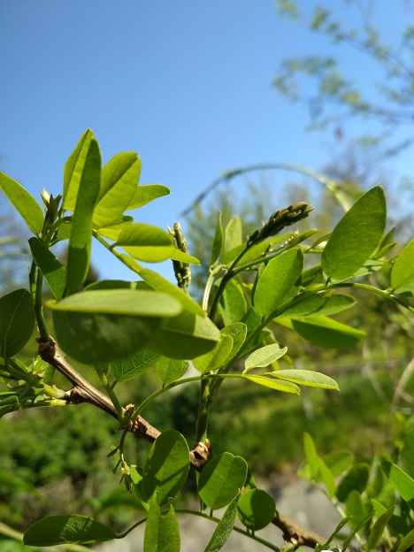
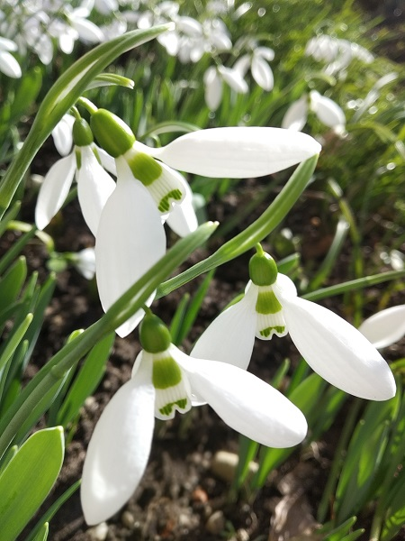

Mi a jelentősége?
Növényfenológiai megfigyelések
This is a longer card with supporting text below as a natural lead-in to additional content. This content is a little bit longer.

Én is részt vehetek?
Legyél te is megfigyelő!
This is a longer card with supporting text below as a natural lead-in to additional content.

Mi a legfrissebb?
Legújabb cikkünk
This is a longer card with supporting text below as a natural lead-in to additional content. This content is a little bit longer.